|
Chi-Tech
|
|
Chi-Tech
|
The Poisson's equation states the following, for  ,
,
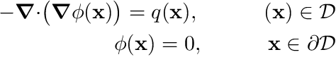
where  denotes the divergence-operator and
denotes the divergence-operator and  denotes the gradient-operator, i.e.
denotes the gradient-operator, i.e.  denotes the gradient of
denotes the gradient of  . The boundary conditions here state that 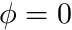 on the boundary.
. The boundary conditions here state that 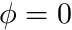 on the boundary.
For our specific problem we will choose  and 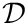 a cartesian domain, either 1D, 2D or 3D, with each dimension always between . We can generate the mesh for this problem using an input file
and 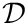 a cartesian domain, either 1D, 2D or 3D, with each dimension always between . We can generate the mesh for this problem using an input file
This code can be used to generate any of the following meshes,

To apply the Finite Volume spatial discretization we integrate Poisson's equation over the volume of the cell
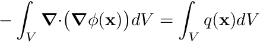
Next we apply the approximation that both and 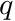 are constant over a cell. Therefore, for cell 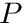, we have the source term

For the left-hand side we first apply Gauss Divergence Theorem,
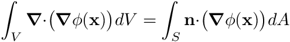
and for a discrete cell this surface integral can be discretized as the sum over all the faces
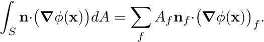
We now still have to resolve  . To comprehend the approximation we are about to make, consider the figure below. We observe a cell , the present cell, and its neighbor, cell 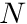, at face 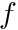. The cell centroids are
. To comprehend the approximation we are about to make, consider the figure below. We observe a cell , the present cell, and its neighbor, cell 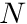, at face 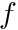. The cell centroids are  and
and  respectively.
respectively.
We next form 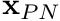, as in the diagram, after which we approximate the gradient of at face as
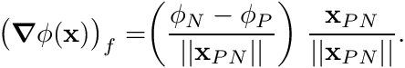
Note that this is essentially a scalar component 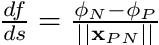 after which we give it a direction by normalizing as 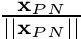.
Our discretized equations now become
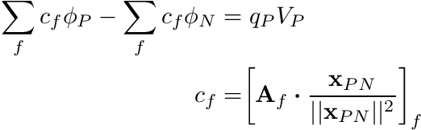
where is the area-vector of the face, i.e. 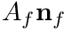 and 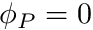 when face is on a boundary (enforcing the Dirichlet boundary condition).
In order to implement the code, we must first follow the steps in Using Chi-Tech as a library. Before proceeding, make sure you are fully acquinted with this step.
For this tutorial we will be deviation from the library tutorial by first changing the cmake target and project name. Therefore, we pick a project folder and create the CMakeLists.txt file but we change the following lines.
So now the entire CMakeLists.txt should look like this
Next we create the source file which we will call code_tut1.cc, and for now we will keep its contents the same as the library tutorial. Therefore code_tut1.cc should look like this
To compile this program we first have to set the CHI_TECH_DIR environment variable. This might be different for everyone but should generally look like this
Note: the directory we want to specify here must contain bin/ (in otherwords) it shouldn't be bin/ itself).
Next we create a directory for running cmake. Inside your project folder, create a folder called chi_build and cd into it.
Then run cmake pointing to the folder that contains the CMakeLists.txt file, which in this case is the parent folder of the one we are in.
After this you should be able to make the project.
after which you should see the following
[ 50%] Building CXX object CMakeFiles/code_tut1.dir/code_tut1.cc.o [100%] Linking CXX executable ../bin/code_tut1 [100%] Built target code_tut1
As a test you can try to execute the project with no arguments which should look like this
../bin/code_tut1 [0] 2022-11-14 13:02:43 Running ChiTech in batch-mode with 1 processes. [0] ChiTech version 1.0.2 [0] ChiTech number of arguments supplied: 0 [0] [0] Usage: exe inputfile [options values] [0] [0] -v Level of verbosity. Default 0. Can be either 0, 1 or 2. [0] a=b Executes argument as a lua string. i.e. x=2 or y=[["string"]] [0] -allow_petsc_error_handler Allow petsc error handler. [0] [0] [0] [0] Final program time 00:00:00 [0] 2022-11-14 13:02:43 ChiTech finished execution of [0] Hello World!
First we remove the lines
Next we include the headers for access to the chi_mesh::MeshHandler and the grid, aka chi_mesh::MeshContinuum
Next we add the following lines of code:
This is the default way of obtaining a grid loaded into the ChiTech state at any moment, normally via an input file.
When you compile and run this code it ought to fail by throwing an exception that looks like this
terminate called after throwing an instance of 'std::logic_error' what(): chi_mesh::GetCurrentHandler: No handlers on stack Abort trap: 6
This means the code was not loaded with a mesh-handler and therefore no grid is defined. To fix this we first create a mesh.lua input file within the chi_build directory.
Use an editor to add the following lines to mesh.lua
This is known as ChiTech lua-console input file. It contains lua code.
To run the program with this input file we simply add it to the command line
If everything went well then you should see the following
[0] Parsing argument 1 mesh.lua [0] 2022-11-14 13:14:52 Running ChiTech in batch-mode with 1 processes. [0] ChiTech version 1.0.2 [0] ChiTech number of arguments supplied: 1 [0] Computing cell-centroids. [0] Done computing cell-centroids. [0] Checking cell-center-to-face orientations [0] Done checking cell-center-to-face orientations [0] 00:00:00 Establishing cell connectivity. [0] 00:00:00 Vertex cell subscriptions complete. [0] 00:00:00 Surpassing cell 40 of 400 (10%) [0] 00:00:00 Surpassing cell 80 of 400 (20%) \\ STUFF \\ STUFF \\ STUFF [0] [0] Final program time 00:00:00 [0] 2022-11-14 13:14:52 ChiTech finished execution of mesh.lua [0] Coding Tutorial 1 [0] Global num cells: 400
All spatial discretizations in ChiTech are based on a grid. Right now we want chi_math::SpatialDiscretization_FV which is the Finite Volume Spatial discretization. It will place only a single node at the centroid of each cell.
To access this discretization we must first include the header for chi_math::SpatialDiscretization_FV,
Next we add the following lines of code
What we did here is to first define the shared-pointer of type chi_math::SpatialDiscretization to be just SMDPtr which greatly reduced the effort on the next line, where we actually instantiate the spatial discretization. Notice the use of chi_math::SpatialDiscretization_FV::New. All of the ChiTech spatial discretizations can only be created as shared pointers, the need for this will only become obvious when you write your own solvers.
The creation of a spatial discretization involves a lot of steps. The first thing the spatial discretization (SD) will do is to create cell-mappings. These contain all the necessary information for each cell to help build codes, e.g., the number of nodes on a cell, its volume, face areas, etc. The second thing the SD does is to order the nodes in parallel in such a way that we can easily map the nodes either globally or locally.
The basic SD operates on the notion of nodes. A node is a place where a specific component of an unknown is located. Since it knows the underlying node structure it can provide index mappings for different unknown-structures. For example, if we stack velocity-x, velocity-y and velocity-z onto a node the SD only needs to know the structure of the unknowns, traditionally called Degrees-of-Freedom or DOFs, in order to provide index-mapping. To keep things simple, all SDs have a unitary chi_math::UnknownManager as a member called UNITARY_UNKNOWN_MANAGER. This unknown manager allows us to map indices assuming only one DOF per node. We obtained a reference to this chi_math::UnknownManager object with the line
With this in-hand we can now query the SD to provide us the number of local- and global DOFs. The local DOFs are those that are stored on the local processor whereas the global DOFs encompass all the DOFs across all processors. The way we ran the code above is only in serial. Therefore when we do this again, with this new code added, we will see the following new output:
[0] Num local DOFs: 400 [0] Num globl DOFs: 400
Since the code runs in serial mode the number of local- and global DOFS are reported to be the same.
To run this code in parallel we change our input, for execution with 3 processors, as
which now produces a different output:
[0] Num local DOFs: 131 [0] Num globl DOFs: 400
Notice the global number of DOFs remains the same. Only the number of local nodes has changed.
ChiTech has several macro-type functions for handling PETSc objects. All of these are accessed via the chi_math::PETScUtils namespace for which we need to include the header
Next we add the following code:
Notice that we made int64_t equivalents of num_local_dofs and its global counterpart. This is because PETSc operates on int64_t. The actual creation of A, x, and b is self explanatory noting that each needs a local-size as well as a global size.
The next two pieces of code after the creation of the PETSc entities allow us to accurately and efficiently set the matrix sparsity pattern, in-turn allowing PETSc to assemble the sparse-matrix efficiently. The sparsity pattern is defined per row and is split into entries locally stored ("in" the diagonal block) and entries stored elsewhere ("off" the diagonal block). We can get this information from our ChiTech SDs by using the BuildSparsityPattern routine. This routine populates nodal_nnz_in_diag and nodal_nnz_off_diag, according to an unknown-structure (which in our case is OneDofPerNode).
Finally we use our sparsity information to set the PETSc matrix's sparsity pattern using chi_math::PETScUtils::InitMatrixSparsity.
The code to assemble the matrix is as follows.
The first item to note is the loop over local cells. ChiTech can only loop over local cells, for more information on this see More detail on Mesh data structures.
Once we have a reference to a local-cell we can now obtain the SD's mapping of that cell using
We can also immediately map the cell's 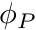 global location in the parallel matrix/vector by making a call to chi_math::SpatialDiscretization::MapDOF.
The syntax of this function is #1 A cell reference, and #2 the node number which, for Finite Volume, will always be zero.
Finally, before looping over the faces, we grab the cell centroid and volume.
The loop over faces is split into two cases, one for internal faces and one for boundary faces. Both cases need the face area-vector there we construct that first
For internal faces, whether that face is internal, i.e., has a neighboring cell, is indicated by the member has_neighbor. Additionally the neighbor's global-id will be stored in the member neighbor_id. If the face does not have a neighbor then neighbor_id doubles as the boundary-id if boundary-ids are used. All cells that at minimum share a vertex with local cells are classified as Ghost-cells in ChiTech. And since a neighbor can be either a local- or ghost-cell we opt here to get a reference to the neighbor cell using its global-id for which we use grid.cells, instead of grid.local_cells which only uses local-ids.
Once we have a reference to the adjacent cell we can now map the address of its unknown as
We then compute
with the code
after that we set the matrix entries associated with and using the PETSc commands
For boundary faces, we essentially do the same, however, we do not have an adjacent cell or . Therefore we extrapolate a virtual boundary cell-centroid using the face-centroid,  , as
, as
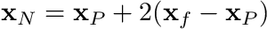
and then
Finally, since there is no neighbor cell entry, we only have a diagonal entry
After the face loops we then set the right-hand side using
where the 1.0 represents .
We finish parallel assembly with the following calls
Most of the following code is self explanatory.
The solver type here was specified as KSPCG which represents the conjugate-gradient method. The preconditioner PCGAMG represents Geometric and/or Algebraic MultiGrid. The combination of this solver and preconditioner is known to be thee most efficient ways to solve these type of systems.
After this solve-step we want to get an STL representation of the PETSc vector so that we can think about visualizing the solution. We can get a local copy of the PETSc vector using the code
Here the SD took care of appropriately copying from the PETSc vector.
After this is completed we have no need for any of the PETSc entities and therefore we destroy them.
ChiTech uses the notion of FieldFunctions and the visualization toolkit, VTK, to visual solutions. In order to gain access to chi_physics::FieldFunction we need to include the header
Next we create the field function using the code
Note here that a field function simply needs a name, a SD, and an unknown structure.
After this is created we can update the field function with a field vector
And finally we can export the solution to VTK with
which takes, as an argument, the base-name of the VTK output files. VTK will utilize the parallel nature of the simulation to generate a set of files
CodeTut1_FV.pvtu CodeTut1_FV_0.vtu CodeTut1_FV_1.vtu CodeTut1_FV_2.vtu
The structure here is that each processor writes a .vtu file. The processor-id is appended to the basename before the .vtu extension is added. These files contain the actual data. An additional proxy-file, used to link all the data together, is written as the base-name with .pvtu appended to it. This .pvtu file can be opened in popular visualization tools such as Visit and Paraview to visualize the solution.
For this tutorial we used Paraview.
And on a finer mesh, with the 3D case being 1 million cells: